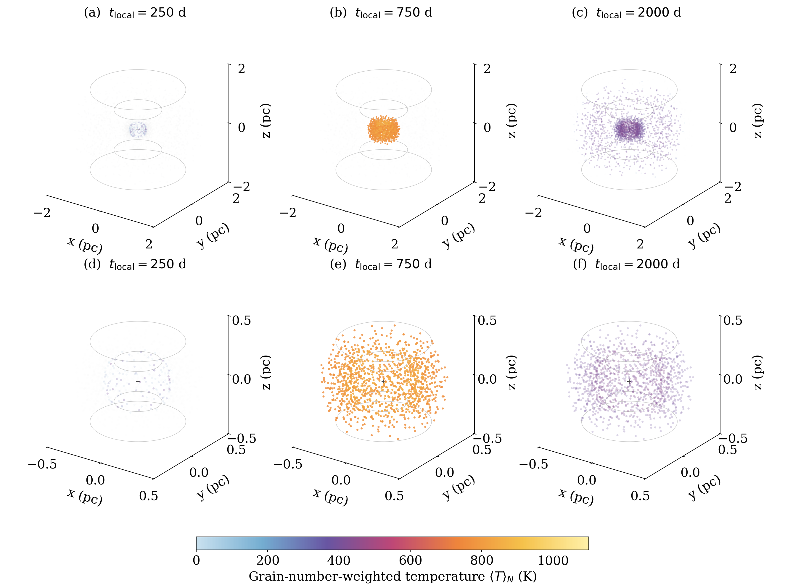

Read the figures correctly
Photometric figures
The light curves show the same photometric uncertainties used in the likelihood. Residuals are (data − model)/σ. Flux–flux plots subtract the fixed host and show errors on both axes. The existing W1−W2 plot uses total fluxes on the Vega system; do not describe it as a host-subtracted colour.
Thermal figures

The colour is ⟨T⟩N = ΣNaTa/ΣNa, a grain-number-weighted equilibrium temperature. It is neither a WISE colour temperature nor a luminosity-weighted temperature. The maximum of this mean need not equal the hottest individual grain.
The upper row shows the full system; the lower row enlarges the compact population. Cold points are more transparent to expose the interior. Display opacity does not represent optical depth. A common colour scale is used, but blending affects the perceived colour, so quantitative values should be taken from tables and temporal curves.
Snapshots use tlocal = 250, 750, and 2000 rest-frame days relative to the unsmoothed fallback peak. They are not images at equal observer-arrival times. Outside saved time support, the corrected script returns NaN instead of an artificial 0 K. Very low computed temperatures inside support reflect the omitted steady heating and possible weak numerical remnants; they are not a physical measurement of ambient cold dust.
Regeneration
python tools/plot_thermal.py --folder examples/case_a
python tools/plot_thermal.py --folder examples/case_a --times 250 750 2000The script produces PDF and PNG figures, corrected tables, and a manifest containing the source-array checksum. It never reruns the RT solver. Text is 18 pt in the source PDF (9 pt at a 50% placement scale). Axes and text are vector elements; 3D point clouds are rasterized at 450 dpi.
Output glossary
| File | Contents |
|---|---|
| summary.json | χ², temperatures, energy ledger, configuration, actual numerics |
| epochs.csv | Observed and predicted fluxes, errors, residuals |
| response.csv | Transient band response versus observer-frame relative time |
| dense.csv | Total model flux on a dense MJD grid |
| thermal_solution.npz | Stored u grid, temperatures, grain numbers, cell indices, emitted power |
| provenance.json | Input/source fingerprints and environment |
| iterations.json | Iteration history |